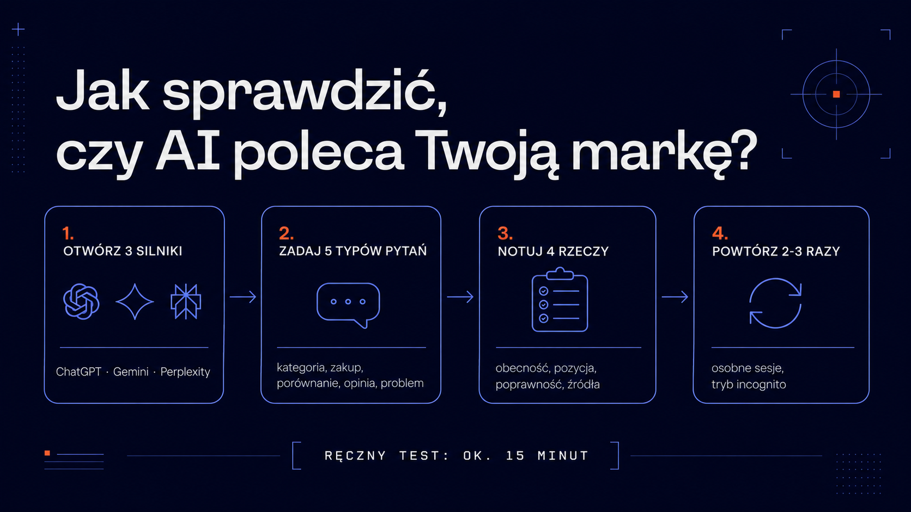

Z ChatGPT korzysta już ponad 10 milionów Polaków – tak wynika z badania Mediapanel Gemius/PBI z października 2025 roku. Według analizy OpenAI i NBER niemal co czwarta rozmowa z czatbotem dotyczy poszukiwania informacji: o produktach, usługach, firmach. Twoi klienci pytają więc sztuczną inteligencję, co kupić i komu zaufać – a Ty najprawdopodobniej nie wiesz, co słyszą w odpowiedzi. Tych rozmów nie zobaczysz w Google Analytics ani w Search Console. W tym przewodniku pokazujemy, jak w kwadrans samodzielnie sprawdzić, czy ChatGPT, Gemini i Perplexity polecają Twoją markę – i co zrobić, jeśli okaże się, że milczą albo mijają się z faktami.
Pierwsza pozycja w Google nie gwarantuje, że ChatGPT wymieni Twoją firmę wśród polecanych. Modele językowe czerpią wiedzę z dwóch źródeł. Pierwsze to dane treningowe – statyczny zbiór tekstów, na których model się uczył, zamrożony w momencie tak zwanej daty odcięcia. Drugie to wyszukiwanie w czasie rzeczywistym: model dobiera bieżące źródła i na ich podstawie buduje odpowiedź.
I tu zaczynają się różnice. Gemini – korzysta z indeksu Google. ChatGPT – z włączonym wyszukiwaniem sięga m.in. po indeks Bing. Perplexity – utrzymuje własny indeks sieci. Każdy silnik widzi internet inaczej, więc marka świetnie widoczna w jednym może w ogóle nie istnieć w drugim.
Jest jeszcze drugi powód: odpowiedź AI to synteza, nie lista linków. Model wymienia dwie, trzy marki z nazwy, a reszta po prostu znika z pola widzenia użytkownika. Skalę tego zjawiska pokazuje nasza analiza wpływu AI Overviews na ruch organiczny ponad 400 polskich stron – nawet utrzymanie pozycji w wynikach nie chroni przed spadkiem kliknięć, gdy odpowiedź generuje AI.
Wniosek jest prosty: widoczność w AI trzeba mierzyć osobno. Klasyczny monitoring pozycji jej nie pokaże.
Podstawowy test zajmie Ci około 15 minut. Otwórz trzy silniki – ChatGPT (z włączonym wyszukiwaniem), Gemini i Perplexity – i zadaj każdemu ten sam zestaw pytań. Ważne: nie pytaj wprost „czy znasz firmę X?", bo model grzecznościowo potwierdzi. Pytaj tak, jak pyta klient, który Cię jeszcze nie zna.
Skorzystaj z pięciu gotowych szablonów (podstaw własną branżę i lokalizację):
Przy każdej odpowiedzi zanotuj cztery rzeczy:
| Co sprawdzasz | Na co zwrócić uwagę |
|---|---|
| Obecność | Czy marka w ogóle pada w odpowiedzi – spontanicznie, nie po dopytaniu |
| Pozycja | Czy jesteś wymieniany pierwszy, trzeci, czy na szarym końcu listy |
| Poprawność | Czy opis oferty jest aktualny – stare ceny i nieistniejące produkty to częsty problem |
| Źródła | Skąd model czerpie wiedzę – czy cytuje Twoją stronę, czy może katalog firm sprzed lat |
Dwa praktyczne nawyki podnoszą wiarygodność testu. Po pierwsze – testuj na wylogowanym koncie albo w trybie incognito, bo personalizacja i pamięć rozmów zafałszują wynik (model, który zna Cię z wcześniejszych rozmów, chętniej wspomni Twoją markę). Po drugie – każde pytanie zadaj dwa, trzy razy w osobnych sesjach. Odpowiedzi modeli potrafią się różnić między uruchomieniami i dopiero powtórzenia pokazują, co jest regułą, a co przypadkiem.

Ręczny test to dobry punkt startu, ale ma cztery ograniczenia, o których trzeba wiedzieć, zanim wyciągniesz wnioski.
Niedeterminizm – ten sam prompt może dać dziś inną odpowiedź niż jutro. Pojedyncze odpytanie to anegdota, nie pomiar. Dlatego liczy się powtarzalność serii, a nie jednorazowy wynik.
Personalizacja – ChatGPT i Gemini coraz mocniej dopasowują odpowiedzi do historii użytkownika. Wynik na Twoim koncie firmowym może wyglądać zupełnie inaczej niż u realnego klienta.
Query fan-out – nowoczesne silniki nie odpowiadają na Twoje pytanie wprost. W tle rozbijają je na dziesiątki własnych zapytań cząstkowych i syntetyzują wyniki. To oznacza, że o widoczności decydują frazy, których nigdy nie zobaczysz w żadnym narzędziu keyword research. Mechanizm opisaliśmy szczegółowo w artykule o optymalizacji treści pod query fan-out.
Skala – ręcznie sprawdzisz kilkanaście pytań na trzech silnikach. Realna mapa widoczności marki to setki kombinacji pytań, silników i powtórzeń. Tego się nie da utrzymać w arkuszu kalkulacyjnym dłużej niż miesiąc.
Część tej pracy można zautomatyzować bezpłatnie. W ramach Grupy ICEA rozwijamy widocznosc.ai – projekt poświęcony w całości widoczności marek w wyszukiwarkach AI, który udostępnia darmowe narzędzia diagnostyczne:
Oba narzędzia działają bez rejestracji i nadają się na pierwszy pomiar bazowy. Na rynku rośnie też segment płatnych platform do stałego monitoringu wzmianek w AI z alertami i analizą konkurencji – mają sens, gdy widoczność w AI staje się dla firmy regularnym wskaźnikiem, a nie jednorazowym audytem.
Brak marki w odpowiedziach to nie wyrok – to punkt wyjścia. Dziedzina, która zajmuje się budowaniem widoczności w silnikach generatywnych, nazywa się GEO (Generative Engine Optimization). Jeśli to dla Ciebie nowe pojęcie, dobre wprowadzenie znajdziesz w przewodniku czym jest GEO.
W praktyce pracę zaczyna się od trzech kierunków:
Jeśli chcesz przejść przez ten proces metodycznie – od biblioteki zapytań testowych, przez pomiar, po plan naprawczy na 90 dni – skorzystaj z pełnego przewodnika audyt widoczności marki w ChatGPT, Gemini i Perplexity krok po kroku. A jeśli wolisz, żeby zrobił to za Ciebie zespół, który mierzy widoczność marek w AI na co dzień – skontaktuj się z nami, przygotujemy audyt GEO Twojej marki.
Minimum raz na kwartał, a w branżach konkurencyjnych raz w miesiącu. Modele są regularnie aktualizowane, a do ich indeksów stale trafiają nowe treści – również te publikowane przez Twoją konkurencję. Jednorazowy test pokazuje stan na dziś, ale nie wychwyci momentu, w którym konkurent zacznie wypierać Cię z odpowiedzi.
Tak, choć nie bezpośrednio. Nie ma panelu, w którym „edytuje się" odpowiedzi modelu. Wpływasz na nie pośrednio: publikując konkretną, cytowalną treść, dbając o techniczną dostępność strony dla botów AI i budując wzmianki w źródłach zewnętrznych, którym modele ufają. To proces obliczony na miesiące, nie dni – dlatego im wcześniej zaczniesz, tym lepiej.
Pozycja w Google to miejsce na liście linków, z której użytkownik sam wybiera. Widoczność w AI to obecność w gotowej odpowiedzi – model wymienia kilka marek i to on decyduje które. Wysoka pozycja w Google pomaga (część silników korzysta z indeksów wyszukiwarek), ale nie wystarcza: liczy się też, czy treść nadaje się do zacytowania i czy marka pojawia się w wiarygodnych źródłach zewnętrznych.
Pierwszy pomiar zrobisz bezpłatnie: ręczny test to 15 minut pracy, a darmowe narzędzia takie jak Widoczność marki w AI automatyzują odpytywanie modeli. Koszty pojawiają się przy stałym monitoringu na większą skalę – platformy enterprise rozliczają się abonamentowo – oraz przy profesjonalnym audycie z planem naprawczym, którego cena zależy od liczby fraz, rynków i silników.